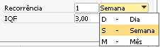
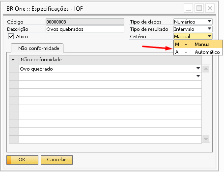
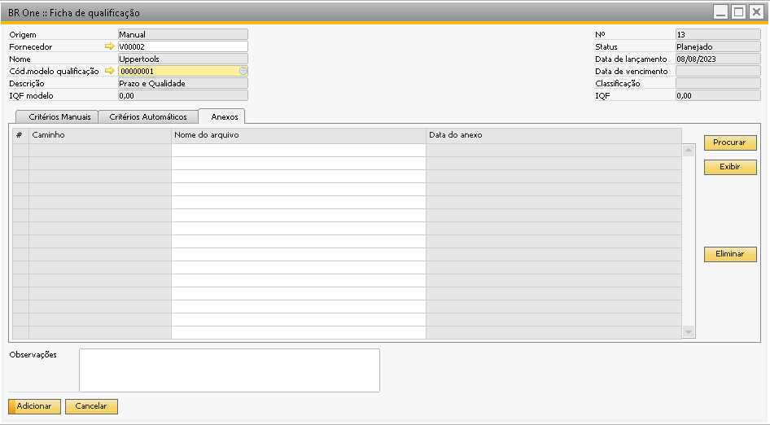

Modelos de qualificação
Para acessar a tela de Modelos de qualificação, é necessatio ir ao menu:
Qualidade -> Modelos de qualificação
A tela Modelos de qualificação é onde o usuário pode cadastrar critérios automáticos e manuais, estes critérios serão levados para as fichas de qualificação criadas.

Os campos de Código e Descrição devem ser preenchidos e utilizados para a identificação do modelo.
O campo recorrência deve ser utilizado para informar qual a frequência ideal para a análise naquele modelo de qualificação, no exemplo acima colocamos 1 vez por semana, mas a recorrência pode ser alterada conforme a necessidade de cada modelo e fornecedor, lembrando que é apenas um campo informativo.
{kind=link}
O campo IQF (Índice de Qualificação do Fornecedor) é um índice utilizado com base no peso para informar se aquele fornecedor será qualificado ou não. No exemplo acima, podemos ver no rodapé que o total de peso para o modelo é 4, isso é, se todas as especificações estiverem de acordo com os valores esperados o fornecedor receberá um índice 4, mas como o IQF foi definido como 3, mesmo que a embalagem (que tem peso 1) não esteja de acordo, o fornecedor ainda estará aprovado. O campo IQF precisa ser maior que zero.

As linhas serão vinculadas com as especificações previamente cadastradas, e assim como nos modelos de análise também precisam ter um valor preenchido na coluna “Valor esperado”.
O que vai definir se a especificação aparecerá para ser vinculada na aba Critérios manuais ou Critérios automáticos é o preenchimento do campo Critério da tela de “Especificações – IQF”
{kind=link}
A especificação não pode ser repetida em nenhuma das abas (Critérios Manuais e Critérios Automáticos).
No campo Valor encontrado deve ser informado o valor da especificação de acordo com o seu tipo. Caso a especificação tenha o tipo de resultado Intervalo (Numérico ou Data), o valor/data a ser considerado para os pontos será o valor dentro do valor mínimo e valor máximo.
Esta tela também possui algumas validações que são realizadas de acordo com o tipo de dado informado na especificação, por exemplo se a especificação for do tipo Numérico e o usuário tente informar um valor que não seja numérico no campo Valor esperado a mensagem abaixo será exibida:

BR One :: A especificação “x” deve possuir valor esperado do tipo “Numérico”.
Caso a especificação seja do tipo Data e o usuário tente informar um valor que não seja data no campo Valor esperado, a seguinte mensagem será exibida:

BR One :: A especificação “x” deve possuir valor esperado do tipo “Data”.
Caso a especificação seja do tipo Sim/Não e o usuário tente informar um valor que não seja Sim/Não no campo Valor esperado, a seguinte mensagem será exibida:

BR One :: A especificação “x” deve possuir valor esperado do tipo “Sim/Não”.
As especificações que possuem Valor mínimo e valor máximo.
A coluna Unid. de medida trará as mesmas informações já cadastradas para o módulo de qualidade.
Para acessar a tela de Unidade de medida, é necessatio ir ao menu:
Administração -> Definição -> Qualidade -> Unidades de medida
Cada linha de especificação deve ter um peso informado maior do que zero, este peso vai indicar a importância daquela especificação, por exemplo se para a empresa é muito importante que o fornecedor cumpra o prazo de entrega, essa especificação de Data de entrega pode ter um peso maior do que as outras especificações, conforme o exemplo abaixo:

O campo Total vai ser preenchido com o a soma dos pesos das duas abas Manual e Automáticos e este campo não poderá ser maior que o campo IQF.
A coluna Observação caso tenha sido preenchida no modelo de qualificação também será levado para a ficha, mas esta informação pode ser alterada pelo usuário, já o campo Observações do rodapé não apresenta as informações cadastradas no modelo e pode ser preenchido diretamente na ficha.

A coluna Ativo caso tenha alguma especificação desmarcada não será levada para a ficha de qualidade, somente as especificações marcadas como ativas serão levadas para a ficha.

A aba Anexos está presente tanto no modelo de qualificação quanto na ficha de qualificação. Ao anexar um documento na tela de modelo ele não será carregado para a ficha. Os documentos podem ser inseridos e removidos tanto do modelo quanto na ficha conforme a simulação abaixo:
{kind=link}